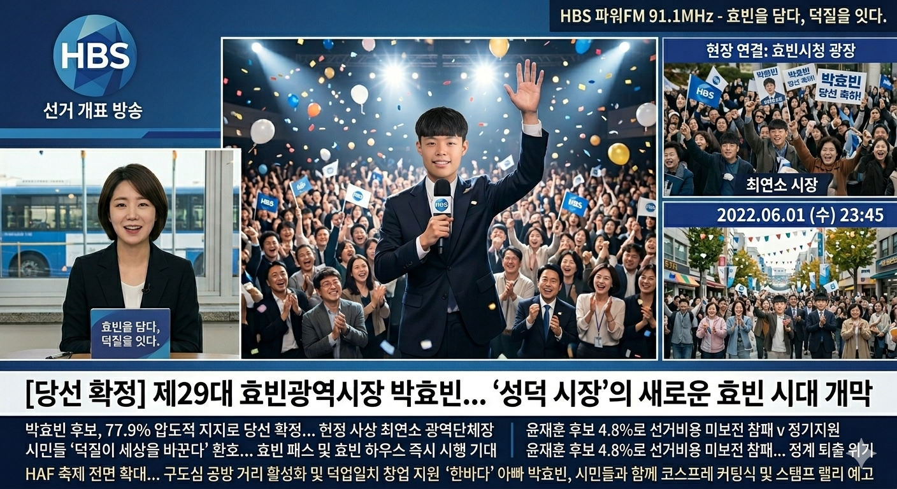

정치 > 선거/분석
'28초의 승부'가 가른 운명... 박효빈 77.9% 압승, 윤재훈 4.8% 몰락
김정치 기자 (politics@hyobinilbo.com)
입력 2022.06.02. 09:00
입력 2022.06.02. 09:00
TV 토론회 방송사고 직후 지지율 '골든 크로스' 아닌 '수직 상승'
보수 무소속 유성민 12% 득표로 윤재훈 3위 추락 '수모'
박효빈 당선인 "과거의 상처로 정치하지 않겠다" 통합 메시지

▲ 2일 새벽 박효빈 당선인이 선거 캠프에서 당선 확정 소식을 듣고 지지자들에게 손을 흔들고 있다.
[효빈일보 = 김정치 기자] 2022 효빈광역시장 선거는 결국 '품격'의 승리로 끝났다. 더불어민주당 박효빈 후보가 77.90%라는 압도적인 득표율로 당선된 반면, 국민의힘 윤재훈 후보는 4.8%라는 치욕적인 성적표를 받아들고 정치적 사망 선고를 받았다.
이번 선거의 승패는 지난달 17일 있었던 **'TV 토론회 방송사고'**가 결정지었다. 토론회 직전까지 박 후보는 60%대의 안정적인 지지율을 유지했으나, 윤 후보가 생방송 중 박 후보에게 패륜적인 욕설과 폭력을 시도하는 장면이 전파를 타면서 여론은 급격히 박 후보에게 쏠렸다.
📊 2022 효빈광역시장 선거 여론조사 추이
| 구분 | 박효빈 (민주) | 윤재훈 (국힘) | 이사원 (정의) | 강성택 (진보) | 유성민 (보수) | 부동층 |
|---|---|---|---|---|---|---|
| 1차 여조 | 60.50% | 14.80% | 2.60% | 4.00% | 4.00% | 13.90% |
| 2차 여조 | 64.87% | 13.10% | 2.70% | 3.50% | 5.00% | 11.23% |
| 3차 여조 | 64.95% | 12.64% | 2.50% | 3.50% | 6.00% | 10.41% |
| 4차 여조 | 66.76% | 11.12% | 2.50% | 3.12% | 6.00% | 10.20% |
| 5차 여조 (토론회 직후) | 75.10% | 6.65% | 1.90% | 1.50% | 9.00% | 5.41% |
| 최종 득표율 | 77.90% | 4.80% | 2.10% | 1.80% | 12.04% | - |
특히 주목할 점은 보수 표심의 이동이다. 토론회 파행 이후 실망한 보수층은 윤재훈 후보 대신 무소속으로 출마한 보수 성향의 유성민 후보에게 결집했다. 유 후보는 12.04%를 득표하며 윤 후보(4.8%)를 제치고 2위를 차지하는 기염을 토했다. 이는 효빈 시민들이 보수 정당이 아닌 '상식'을 선택했음을 보여준다.
박효빈 당선인은 당선 소감에서 "저를 지지하지 않은 시민들의 마음까지 헤아리는 통합의 시장이 되겠다"며 "과거의 아픔을 딛고 미래로 나아가는 효빈을 만들겠다"고 포부를 밝혔다.
<저작권자 © 효빈일보, 무단 전재 및 재배포 금지>